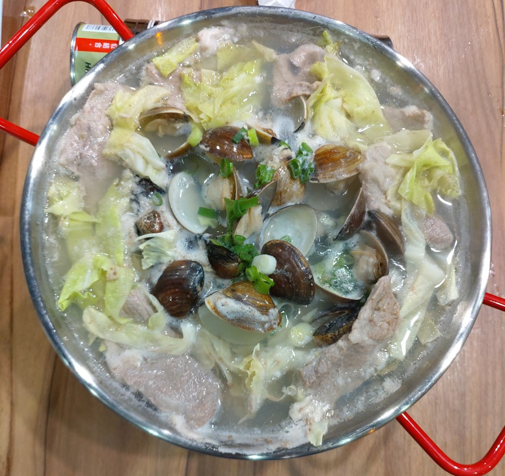

[竹北] 享初食堂 竹北店
餐廳名稱: 享初食堂 竹北店
地 址: 竹北市嘉豐二段二街二號
營業時間: 11:30~14:30 17:00~22:00 週一公休
享初食堂 算是新竹市東門市場的名店，據說家裡在台東是開麵線攤， 東門市場最近幾年復興，享初食堂 算是第一代搬進去的， 曾經去外帶過麵線。第一代的店成功率蠻高的，讓更多商家決定搬進去， 東門市場終於重回繁榮之路。
當年那碗麵線，不差，但也沒覺得很傑出，不過 麵線加居酒屋的新形態， 成功吸引不少人，大概趁勝追擊，開了這間竹北店。今天是剛開幕就來， 嚐鮮的人不少，店員手忙腳亂的，出了很多錯，例如，一個老婆婆店員， 店長叫她去擦桌子，隔壁桌該擦的不擦，我們這桌已擦過一次的，跑來 擦擦就跑了。小東門啵啵蛤 是我們先點的，老婆婆店員送去隔壁桌， 想說第二道啵啵蛤應該快來了，就不計較，結果等很久，一整個莫名 其妙。我想，各位還是等上軌道之後再來吧。

店內裝潢，其實沒改太多，大致上還是前一家的裝潢。
菜單，可以看到，費時的都先劃掉了。
大腸麵線，評價還是一樣，不差，但也沒覺得很傑出。
這是加點的附餐，可爾必思 跟 溏心蛋。蛋的切痕呈鋸齒狀，這又是 沒經驗加趕工的店員切的吧，味道正常。
炒水蓮 與 日式炸豬排 兩道菜，味道正常。
牛五花麵線，那個牛五花略有筋，這點不討喜，其他正常。
小東門啵啵蛤，是東門市場裡另一家餐廳 小東門 的名菜，是知名部落客 踢小米從澳門引進的。享初食堂 居然授權該道菜，竹北店才有販售。 剛上來都是生的，下面瓦斯爐煮熟，蛤蠣就會啵啵啵啵地打開， 就可以吃了。
這就是煮熟後的樣子，其實蠻好吃的，蛤蠣本來就是很適合煮湯， 加上肉片，高麗菜，蔥花，也許本來就加一點高湯，蛤蠣，蔬菜 釋放出更多的湯汁，最後的湯味道鮮美，蛤蠣剛煮熟，很軟嫩， 難怪澳門保存至今。唯一的缺點就是 價格，250元，其實說穿了， 就是個小火鍋而已，配料還簡單很多，可是取名為啵啵蛤， 搞的每個人都想嚐鮮。 
其實就是很正常的一家店，各項食物也都很正常，就是如果想吃 這種類型的食物，可以來這邊享用。我大概就吃這一次吧，人生 很短，我要繼續去踩雷其他沒吃過店家。